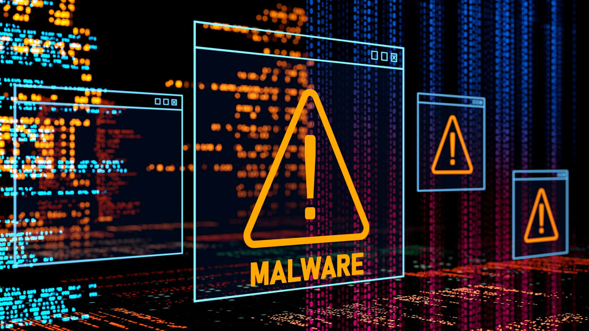

Basic Info on Cybersecurity
Cybersecurity is about protecting your accounts, devices, and data from unauthorized access. The biggest everyday risks come from phishing, malware, and weak passwords, and the good news is that simple habits dramatically reduce your chances of being hacked.
Cybersecurity protects people and systems from digital attacks — things like stolen passwords, infected devices, or trick messages designed to fool you. It matters because attackers often target everyday users, not just big companies.
Phishing
Phishing is when attackers send fake emails, texts, or messages pretending to be a trusted source (banks, Amazon, your school, HR, etc.) to trick you into clicking a link or giving your login info.

Online Security: Stay Safe.
How Phishing Works
- Fake “reset your password” or “your account will be closed” emails
- Messages with urgent language (“act now!”)
- Links that look real but lead to malicious sites
- Attachments that install malware
How to Protect Yourself
- Don’t click login links from emails — go directly to the website[cite: 4].
- Check the sender’s email address carefully.
- Be suspicious of urgency or threats.
- Never give passwords or MFA codes to anyone.
Malware
Malware = malicious software designed to harm your device or steal data. It includes viruses, spyware, trojans, and ransomware.
Common Types
- Ransomware: locks your files and demands payment.
- Spyware: secretly collects your data.
- Trojans: disguised as legit software but harmful.
How Malware Spreads
- Malicious email attachments
- Fake downloads
- Compromised websites
- USB drives or shared files
How to Protect Yourself
- Keep your device and apps updated.
- Don’t open unexpected attachments.
- Use antivirus or built-in security tools.
- Back up important files regularly.
Weak Passwords
Weak passwords are one of the easiest ways hackers break into accounts. Attackers use automated tools to guess or reuse stolen passwords at massive scale.
How Attackers Exploit Weak Passwords
- Credential stuffing: using leaked passwords from one site to log into others.
- Password spraying: trying common passwords (like “Summer2026!”) across many accounts.
- Brute force: guessing millions of combinations until one works.
What Makes a Strong Password
- Long (12–16+ characters)
- Unique for every account
- Not based on personal info
- Stored in a password manager (Bitwarden, 1Password, etc.)
Best Practices
- Turn on multi-factor authentication (MFA) everywhere.
- Never share passwords via text or email.
- Check if your email has been in a breach (haveibeenpwned.com).
How These Threats Fit Together
Most successful attacks start with phishing, which leads to stolen passwords, which leads to account takeover, which can lead to malware or financial loss. Over 90% of cyberattacks begin with phishing attempts.
The 5 Most Important Habits (High Impact, Low Effort)
- Use a password manager for unique passwords.
- Enable MFA on email, banking, and social media.
- Update your devices automatically.
- Be cautious with links and attachments.
- Back up important files (cloud + external drive).